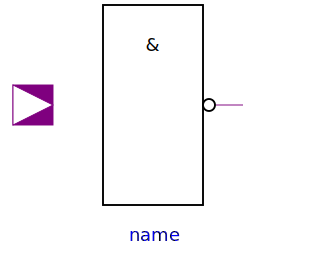
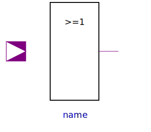
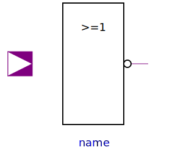
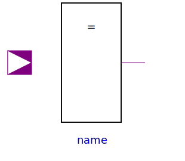

Basic contains the basic gates according to standard logic. The components of Basic calculate their results using the corresponding truth tables. They do not contain any delay components.
| Name | Description |
|---|---|
| Not | Not logic component without delay |
| And | And logic component with multiple input and one output |
|  Nand | Nand logic component with multiple input and one output |
|  Or | Or logic component with multiple input and one output |
|  Nor | Nor logic component with multiple input and one output |
| Xor | Xor logic component with multiple input and one output |
|  Xnor | Xnor logic component with multiple input and one output |